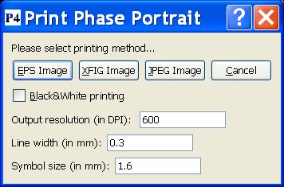
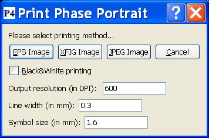
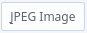
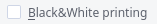
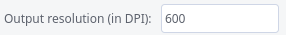
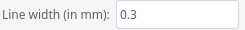
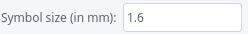

Polynomial Planar Phase Portraits
THE PRINT WINDOW

This window allows to print the Polynomial Planar Phase Portrait you
have just drawn into your printer or into a file. Of course, the black background on the images
is changed into the usual white printing background, and because the standard color for orbits (yellow)
doesn't look nice on a white background, standard orbits will be printed in black instead:
Polynomial Planar Phase Portraits
THE PRINT WINDOW

This window allows to print the Polynomial Planar Phase Portrait you
have just drawn into your printer or into a file. Of course, the black background on the images
is changed into the usual white printing background, and because the standard color for orbits (yellow)
doesn't look nice on a white background, standard orbits will be printed in black instead:
 P4 produces an image that is 15cm wide. Normally the image height will then also be 15cm, however
it may be different: P4 will calculate the height so that the image is produced in an euclidean way.
The output is stored in a file that has the same name as the vector field that was
introduced in the
P4 produces an image that is 15cm wide. Normally the image height will then also be 15cm, however
it may be different: P4 will calculate the height so that the image is produced in an euclidean way.
The output is stored in a file that has the same name as the vector field that was
introduced in the  field in the P4 window,
and will receive the extension .EPS, .FIG or .JPG, depending on the
printing method that you choose:
field in the P4 window,
and will receive the extension .EPS, .FIG or .JPG, depending on the
printing method that you choose:
-
Use the button to produce an Encapsulated Postscript image.
-
Use the button to produce an XFIG image.
-
Use the  button to produce a JPEG image.
The option  allows you to remove color from the output and produce everything in black and white.
The output image is produced with a resolution that is specified in ,
expressed in DPI (Dots Per Inch). For JPEG images in particular this means that the number of horizontal pixels in the image is the given resolution multiplied by 15cm/2.54.
In the fields  and  you can adapt the default values in order to make the lines that are used to draw orbits, the poincare sphere etc thinner or thicker, and to
make the symbols that are used to identify the singularities smaller or bigger.
 Back to the main page
Back to the main page
 Back to the windows page
Back to the windows page